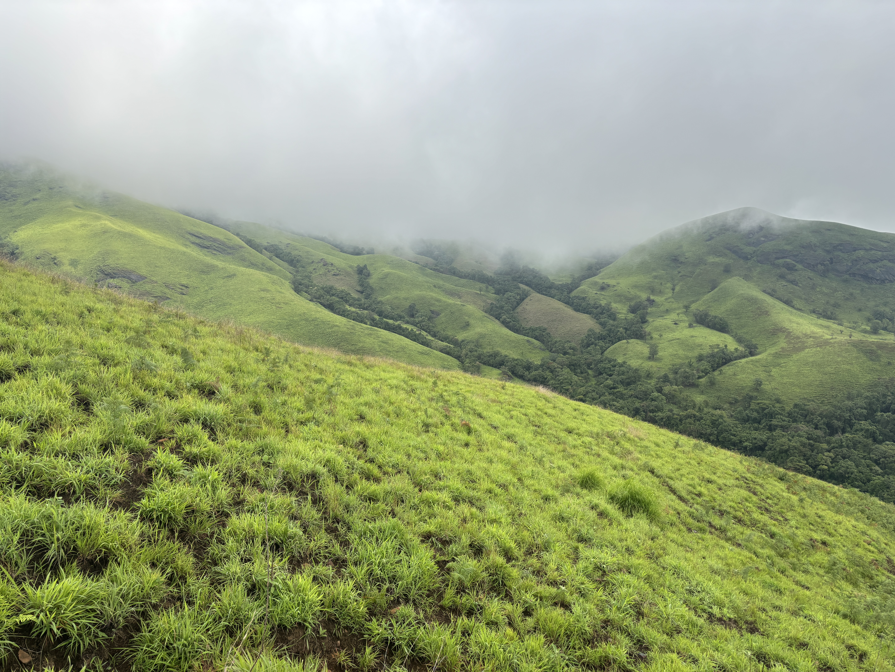
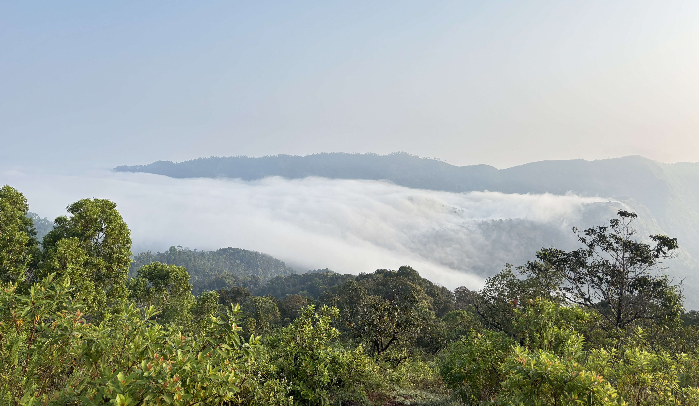
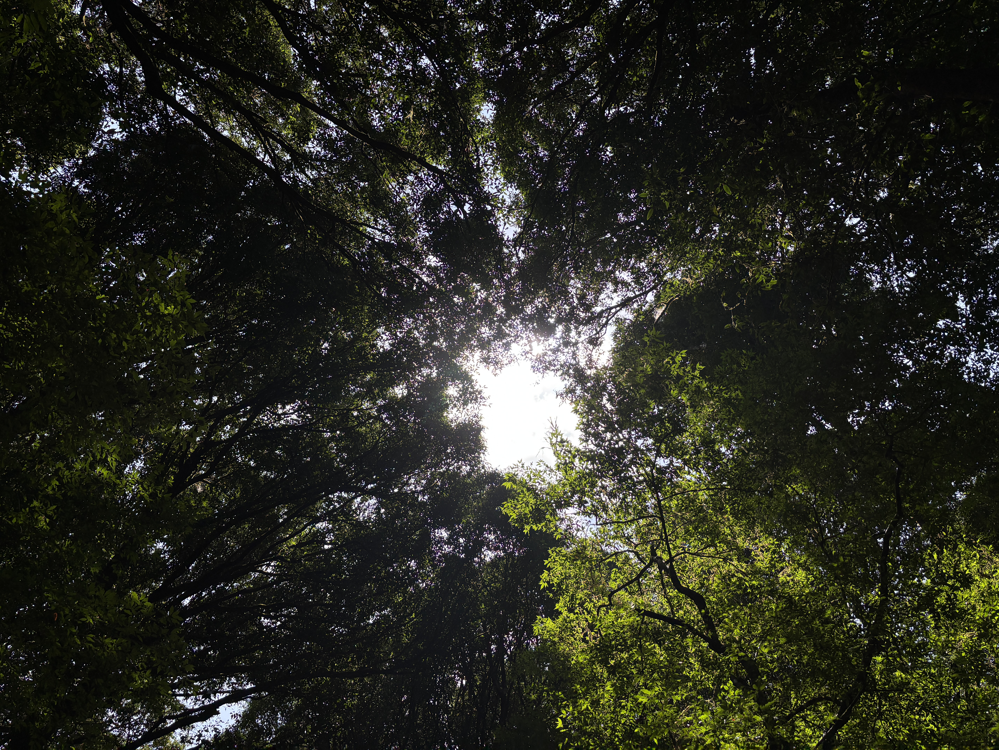

Everyone starts somewhere. Usually at the bottom, a little nervous.
The things no one tells you before your first mountain — honest, practical, from the trail itself.
Every confident trekker you see was once the one stopping every ten minutes, red-faced, wondering why they signed up. I was. This guide is what I wish someone had told me before my first trek in the Western Ghats — the real version, not the brochure one.
Tap any one to open it.
Your body takes 30–45 minutes to find its rhythm. Feeling awful early is normal — it gets easier.
The descent is where knees shake and most slips happen. Save energy for it.
That's just what effort feels like. Slow down, drink water, take ten more steps. Then ten more.
It's not a race. A good group waits, and the mountain doesn't care how long you took.
Grades are written by people who trek every weekend. Easy means moderate; moderate means challenging.
Especially in the Ghats. The view is a bonus, not a guarantee — the walk is still worth it.
Use the base village. On the trail, go well away from water and the path, and pack out your tissues.
Download offline maps, use airplane mode between photos, and carry a power bank.
Be at the trailhead by 6:30–7 am. Late starts mean peak heat and racing the sunset down.
Soreness peaks 24–48 hours later. Stretch, keep walking gently, and avoid stairs if you can.
Your first trek should leave you tired and happy — not broken. Start smaller than your ego wants to.
| Grade | What it really means | Typical day |
|---|---|---|
| Easy | Well-defined path, gentle gradient, mostly walking. Ideal first trek. | 6–10 km · 3–5 hrs |
| Moderate | Steady climbs, some rocky or slippery stretches, longer day. Good second or third trek. | 10–16 km · 5–8 hrs |
| Difficult | Steep sustained ascents, scrambling, long distance. Needs prior experience and fitness. | 16–24 km · 8–12 hrs |
Under 12 km, a clear popular trail, and a group or guide — never solo for your first few.
Read my honest write-ups of Bandaje, Kudremukha, Netravathi, Kodachadri and Kurinjal.

No gym needed. Four to six weeks of brisk walks, stair climbing and a few squats is enough. My fitness guide has a simple routine.
Gear doesn't need to be expensive either — just right:
Carry at least 2 litres of water, snacks, ORS, a first aid kit, a headlamp and ID. Full checklist: The Packing List.
If you can't talk in short sentences, you're going too fast.
Short 1–2 minute breaks. Long sit-downs make your legs stiffen.
Sip every 15–20 minutes, nibble something every hour.
Knees soft, small steps, turn sideways on wet rock. Use your hands.
Dizziness, chest pain, an injury, heavy rain or fading daylight — turn back. The mountain will still be there next season.

Lush and misty, but slippery and leech-filled. Many trails close.
Green, cool, clearer views and firmer trails.
Hot and dry. Start very early; some trails close for fire season.
Harmless and painless. Tuck pants into socks, carry salt, and never pull one off.
Many peaks need advance online booking with the Karnataka Forest Department. Check before you go.
Fog and rain can roll in within an hour. Stay with your group.
Gaur, snakes, sometimes elephants. Keep quiet, never feed animals.
Pack out everything you carry in. Keep speakers off. Uphill has right of way. Stay on the trail, and never leave anyone behind alone.

Yes. Pick an easy trek, train for a few weeks, and go with people who'll wait. Check with your doctor if you have a medical condition.
Generally, yes, on popular regulated trails. Go with a trusted group, share your live location, and avoid solo treks until you're experienced.
No. Good grippy shoes are the only real investment. Everything else can be affordable or borrowed.
Turn around — it's a skill, not a failure. Tell your group leader early.
Absolutely. Carry extra supplies, wet wipes, a zip-lock bag to pack used products out, and a painkiller if you need one.
Every mountain you'll ever climb— She Explores, Trail Notes
starts with deciding
to show up for the first one.